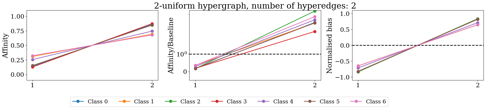
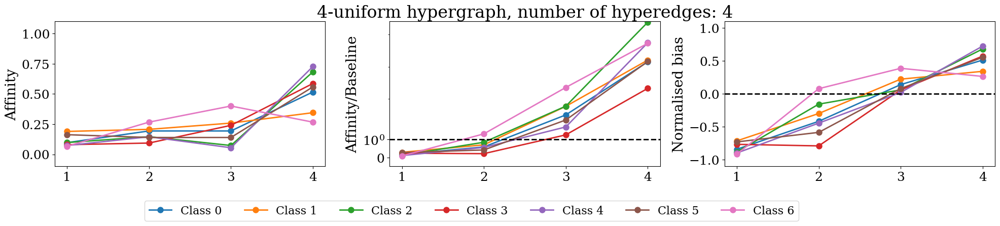
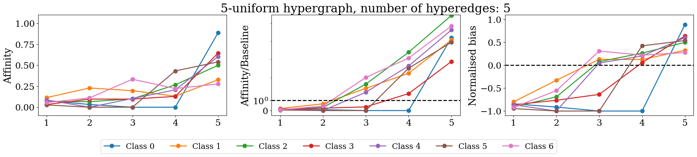

Homophily Tutorial#
In [ ]:
import rootutils
rootutils.setup_root("./", indicator=".project-root", pythonpath=True)
import torch
import hydra
from topobench.data.loaders.graph import *
from topobench.data.loaders.hypergraph import *
from topobench.data.preprocessor import PreProcessor
from topobench.utils.config_resolvers import (
get_default_transform,
get_monitor_metric,
get_monitor_mode,
infer_in_channels,
)
import numpy as np
import matplotlib.pyplot as plt
%load_ext autoreload
%autoreload 2
hydra.initialize(config_path="../configs", job_name="job")
Group Homophily#
Loade the data and calculate the group homophily#
In [2]:
cfg = hydra.compose(config_name="run.yaml", overrides=["model=hypergraph/unignn2", "dataset=hypergraph/coauthorship_cora"], return_hydra_config=True)
loader = hydra.utils.instantiate(cfg.dataset.loader)
dataset, dataset_dir = loader.load()
# Apply transform
transform_config = {"group_homophily" :
{
'_target_': 'topobench.transforms.data_transform.DataTransform',
'transform_name': 'GroupCombinatorialHomophily',
'transform_type': 'data manipulation',
'top_k': 5,
}
}
processed_dataset = PreProcessor(dataset, dataset_dir, transform_config)
data = processed_dataset.data
Download complete.
Transform parameters are the same, using existing data_dir: /home/lev/projects/TopoBench/datasets/hypergraph/coauthorship/coauthorship_cora/group_homophily/1048349801
Extracting /home/lev/projects/TopoBench/datasets/hypergraph/coauthorship/coauthorship_cora/raw/coauthorship_cora.zip
/home/lev/miniconda3/envs/tb/lib/python3.11/site-packages/torch_geometric/data/in_memory_dataset.py:300: UserWarning: It is not recommended to directly access the internal storage format `data` of an 'InMemoryDataset'. If you are absolutely certain what you are doing, access the internal storage via `InMemoryDataset._data` instead to suppress this warning. Alternatively, you can access stacked individual attributes of every graph via `dataset.{attr_name}`.
warnings.warn(msg)
Define plotting function#
In [3]:
import numpy as np
import matplotlib.pyplot as plt
colors = np.array([
'#1f77b4', '#ff7f0e', '#2ca02c', '#d62728', '#9467bd',
'#8c564b', '#e377c2', '#7f7f7f', '#bcbd22', '#17becf',
'#aec7e8', '#ffbb78', '#98df8a', '#ff9896', '#c5b0d5',
'#c49c94', '#f7b6d2', '#c7c7c7', '#dbdb8d', '#9edae5',
'#393b79', '#637939', '#8c6d31', '#843c39', '#7b4173',
'#d6616b', '#d1e5f0', '#e7ba52', '#d6616b', '#ad494a',
'#8c6d31', '#e7969c', '#7b4173', '#aec7e8', '#ff9896',
'#98df8a', '#d62728', '#ffbb78', '#1f77b4', '#ff7f0e',
'#2ca02c', '#9467bd', '#8c564b', '#e377c2', '#7f7f7f',
'#bcbd22', '#17becf', '#c5b0d5', '#c49c94', '#f7b6d2',
'#393b79', '#637939', '#8c6d31', '#843c39', '#7b4173',
'#d6616b', '#d1e5f0', '#e7ba52', '#d6616b', '#ad494a',
'#8c6d31', '#e7969c', '#7b4173', '#aec7e8', '#ff9896',
'#98df8a', '#d62728', '#ffbb78', '#1f77b4', '#ff7f0e',
'#2ca02c', '#9467bd', '#8c564b', '#e377c2', '#7f7f7f',
'#bcbd22', '#17becf', '#c5b0d5', '#c49c94', '#f7b6d2'
])
def normalised_bias(D, B):
out = torch.zeros(D.shape)
for i in range(D.shape[0]):
for j in range(D.shape[1]):
if D[i,j] >= B[i,j]:
out[i,j] = (D[i,j] - B[i,j]) / (1 - B[i,j])
else:
out[i,j] = (D[i,j] - B[i,j]) / B[i,j]
return out
def make_plot(Dt, Bt, max_k, number_of_he, plot_type, ax, plot_tyitle=False):
settings = {
'font.family': 'serif',
'text.latex.preamble': '\\renewcommand{\\rmdefault}{ptm}\\renewcommand{\\sfdefault}{phv}',
'figure.figsize': (5.5, 3.399186938124422),
'figure.constrained_layout.use': True,
'figure.autolayout': False,
'font.size': 16,
'axes.labelsize': 24,
'legend.fontsize': 24,
'xtick.labelsize': 24,
'ytick.labelsize': 24,
'axes.titlesize': 24}
with plt.rc_context(settings):
if plot_type == 'normalised':
h_t = normalised_bias(Dt, Bt)
elif plot_type == 'affinity/baseline':
h_t = Dt/Bt
elif plot_type == 'affinity':
h_t = Dt
else:
raise ValueError('plot_type must be one of: normalised, affinity/baseline, affinity')
if max_k <= 20:
# Plot h_t lines with different colors corresponting to each row
for i in range(h_t.shape[0]):
ax.plot(h_t[i], '-o', markersize=8, color=colors[i], linewidth=2)
else:
x_values_to_visualize = []
# Visualise only non-zero values, x indices have to correspont to position of non zero values
for i in range(h_t.shape[0]):
# Get non-zero values
if plot_type in ['affinity', 'affinity/baseline']:
non_zero = np.where(h_t[i, :] > 1e-6)[0]
#print(non_zero)
elif plot_type == 'normalised':
# do not take the ones which are equal to 0
non_zero = np.where((h_t[i, :] > -0.99) & (h_t[i, :] != 0))[0]
# Plot non-zero values and make sure when several values have same y value they are not plotted on top of each other
ax.plot(non_zero + 1, h_t[i, non_zero], '-o', markersize=4, color=colors[i])
# Add x values to the list of x values to visualise
x_values_to_visualize.extend(list(set(list(non_zero + 1))))
# Manually put axis x values and five size of the ticks
if max_k <= 20:
ax.set_xticks(range(h_t.shape[1]), [str(i) for i in range(1, h_t.shape[1]+1)])
else:
ax.set_xticks(x_values_to_visualize, [str(i) for i in x_values_to_visualize])
# Size of the ticks
ax.tick_params(axis='x', which='major')
# Add title and labels
if plot_tyitle:
ax.set_title(f'{max_k}-uniform hypergraph, number of hyperedges: {number_of_he}')
else:
pass
# Add grid to the plot
ax.grid()
if plot_type == 'normalised':
ax.set_ylabel('Normalised bias', fontsize=20)
# Put a line perpendicular axis x in values 1, make it thin and black
ax.axhline(y=0, color='k', linestyle='--', linewidth=2)
# Make y scale be between 0 and 1
ax.set_ylim(-1.1, 1.1)
#plt.ylim(bottom=-1.2)
elif plot_type == 'affinity/baseline':
ax.set_ylabel('Affinity/Baseline', fontsize=20 )
# Make y axis logarithmic with 10 as base
# Make y axis logarithmic but manually
ax.set_yscale('symlog')
# Put a line perpendicular axis x in values 1, make it thin and black
ax.axhline(y=1, color='k', linestyle='--', linewidth=2)
ax.set_yticks([0, 1])
ax.set_ylim(bottom=-0.5)
elif plot_type == 'affinity':
ax.set_ylabel('Affinity', fontsize=20)
ax.set_ylim(-0.1, 1.1)
else:
raise ValueError('plot_type must be one of: normalised, affinity-t, affinity')
ax.grid()
return ax
Plotting#
In [4]:
unique_labels = torch.unique(data.y).numpy()
figures = []
for key in data.group_combinatorial_homophily.keys():
max_k = int(key.strip('he_card='))
Dt, Bt, number_of_he = data.group_combinatorial_homophily[key]['Dt'], data.group_combinatorial_homophily[key]['Bt'], data.group_combinatorial_homophily[key]['num_hyperedges']
settings = {
'font.family': 'serif',
'text.latex.preamble': '\\renewcommand{\\rmdefault}{ptm}\\renewcommand{\\sfdefault}{phv}',
'figure.figsize': (20, 4),
'figure.constrained_layout.use': True,
'figure.autolayout': False,
'font.size': 16,
'axes.labelsize': 18,
'legend.fontsize': 24,
'xtick.labelsize': 18,
'ytick.labelsize': 18,
'axes.titlesize': 18}
with plt.rc_context(settings):
f, (ax1, ax2, ax3) = plt.subplots(1, 3)
figures.append(make_plot(Dt, Bt, max_k, max_k, ax=ax1, plot_type='affinity'))
figures.append(make_plot(Dt, Bt, max_k, max_k, ax=ax2, plot_type='affinity/baseline', plot_tyitle=True))
figures.append(make_plot(Dt, Bt, max_k, max_k, ax=ax3, plot_type='normalised'))
f.tight_layout()
if Dt.shape[0]>4 and Dt.shape[0]<= 20:
f.legend(['Class {}'.format(i) for i in range(len(unique_labels))], fontsize=16,
ncol=Dt.shape[0],
bbox_to_anchor=(0.8, .0))
elif len(unique_labels)> 20:
pass
else:
f.legend(['Class {}'.format(i) for i in range(len(unique_labels))], fontsize=16,
ncol=Dt.shape[0],
bbox_to_anchor=(0.65, .0))
plt.show()
/tmp/ipykernel_97245/14240756.py:24: UserWarning: The figure layout has changed to tight
f.tight_layout()

/tmp/ipykernel_97245/14240756.py:24: UserWarning: The figure layout has changed to tight
f.tight_layout()

/tmp/ipykernel_97245/14240756.py:24: UserWarning: The figure layout has changed to tight
f.tight_layout()

/tmp/ipykernel_97245/14240756.py:24: UserWarning: The figure layout has changed to tight
f.tight_layout()

Message-Passing Homophily#
In [5]:
cfg = hydra.compose(config_name="run.yaml", overrides=["model=hypergraph/unignn2","dataset=hypergraph/coauthorship_cora"], return_hydra_config=True)
loader = hydra.utils.instantiate(cfg.dataset.loader)
dataset, dataset_dir = loader.load()
data = dataset.data
# Create transform config
transform_config = {"mp_homophily" :
{
'_target_': 'topobench.transforms.data_transform.DataTransform',
'transform_name': 'MessagePassingHomophily',
'transform_type': 'data manipulation',
'num_steps': 3,
'incidence_field': "incidence_hyperedges",
}
}
# Apply transform
processed_dataset = PreProcessor(dataset, dataset_dir, transform_config)
data = processed_dataset.data
Download complete.
Transform parameters are the same, using existing data_dir: /home/lev/projects/TopoBench/datasets/hypergraph/coauthorship/coauthorship_cora/mp_homophily/2005719047
Extracting /home/lev/projects/TopoBench/datasets/hypergraph/coauthorship/coauthorship_cora/raw/coauthorship_cora.zip
/home/lev/miniconda3/envs/tb/lib/python3.11/site-packages/torch_geometric/data/in_memory_dataset.py:300: UserWarning: It is not recommended to directly access the internal storage format `data` of an 'InMemoryDataset'. If you are absolutely certain what you are doing, access the internal storage via `InMemoryDataset._data` instead to suppress this warning. Alternatively, you can access stacked individual attributes of every graph via `dataset.{attr_name}`.
warnings.warn(msg)
Plotting#
In [6]:
def plot_homophily_scatter(avr_class_type1, labels, non_isolated_nodes, type1, step, save_to=None):
colors = np.array([
'#1f77b4', '#ff7f0e', '#2ca02c', '#d62728', '#9467bd',
'#8c564b', '#e377c2', '#7f7f7f', '#bcbd22', '#17becf',
'#aec7e8', '#ffbb78', '#98df8a', '#ff9896', '#c5b0d5',
'#c49c94', '#f7b6d2', '#c7c7c7', '#dbdb8d', '#9edae5',
'#393b79', '#637939', '#8c6d31', '#843c39', '#7b4173',
'#d6616b', '#d1e5f0', '#e7ba52', '#d6616b', '#ad494a',
'#8c6d31', '#e7969c', '#7b4173', '#aec7e8', '#ff9896',
'#98df8a', '#d62728', '#ffbb78', '#1f77b4', '#ff7f0e',
'#2ca02c', '#9467bd', '#8c564b', '#e377c2', '#7f7f7f',
'#bcbd22', '#17becf', '#c5b0d5', '#c49c94', '#f7b6d2',
'#393b79', '#637939', '#8c6d31', '#843c39', '#7b4173',
'#d6616b', '#d1e5f0', '#e7ba52', '#d6616b', '#ad494a',
'#8c6d31', '#e7969c', '#7b4173', '#aec7e8', '#ff9896',
'#98df8a', '#d62728', '#ffbb78', '#1f77b4', '#ff7f0e',
'#2ca02c', '#9467bd', '#8c564b', '#e377c2', '#7f7f7f',
'#bcbd22', '#17becf', '#c5b0d5', '#c49c94', '#f7b6d2'
])
right_shift_points = 0
shift = int(np.mean(np.unique(labels[non_isolated_nodes], return_counts=True)[1]) * 0.1) #+ int(np.std(np.unique(labels, return_counts=True)[1]) * 0.1)
plt.figure(figsize=(10, 6))
for i in range(len(avr_class_type1)):
x_left = np.where(labels[non_isolated_nodes] == i)[0][0] + right_shift_points
x_right = np.where(labels[non_isolated_nodes] == i)[0][-1] + right_shift_points
plt.plot([x_left, x_right],
[avr_class_type1[i], avr_class_type1[i]],
color=colors[i],
linewidth=2)
plt.tick_params(axis='x', which='both', bottom=False, top=False, labelbottom=False)
plt.vlines(x=[x_left, x_right],
ymin=[avr_class_type1[i]-0.01, avr_class_type1[i]-0.01],
ymax=[avr_class_type1[i]+0.01, avr_class_type1[i]+0.01],
colors=colors[i], ls='-', lw=1)
if len(np.unique(labels)) < 20:
text_fontsize = 20
else:
text_fontsize = 10
plt.text(x_left + (x_right - x_left)/2,
avr_class_type1[i] + 0.03,
np.where(labels[non_isolated_nodes] == i)[0].shape[0],
horizontalalignment='center',
verticalalignment='center',
color='black', weight='bold',
fontsize=text_fontsize)
right_shift_points += shift
# if len(np.unique(labels))< 20:
# leg = [mlines.Line2D([], [], color=colors[i], label=f'Class {i}') for i in range(len(avr_class_type1))]
# plt.legend(handles=leg, loc='upper center', bbox_to_anchor=(0.5, -0.0), ncol=len(avr_class_type1), fontsize=10)
right_shift_points = 0
x = np.arange(len(type1))
for i in range(len(avr_class_type1)):
plt.scatter(x[np.where(labels[non_isolated_nodes] == i)[0]] + right_shift_points, type1[np.where(labels[non_isolated_nodes] == i)[0]],
c=colors[i], s=10, marker='+', alpha=.75, label=f'Class {i}')
most_right_point = x[np.where(labels[non_isolated_nodes] == i)[0]][-1] + right_shift_points
plt.scatter([most_right_point] * shift + np.arange(shift), [1]*shift,
c=colors[i], s=10, marker='+', alpha=.0)
right_shift_points += shift
if step>0:
# get rid of y ticks
plt.yticks(np.arange(0, 1.05, 0.1), alpha=0.0)
plt.ylim(0, 1.05)
else:
plt.ylabel('Homophily', fontsize=28)
plt.yticks(np.arange(0, 1.05, 0.1))
plt.ylim(0, 1.05)
plt.grid(axis='x', color='white', linestyle='-')
if save_to is not None:
plt.savefig(save_to, dpi=600)
fig = plt.gcf()
plt.close()
return fig
In [7]:
H = data.incidence_hyperedges.to_dense().numpy()
labels = data.y.numpy()
n_steps=11
Ep, Np = data['mp_homophily']['Ep'].numpy(), data['mp_homophily']['Np'].numpy()
num_steps = transform_config['mp_homophily']['num_steps']
isolated_nodes = np.where(H.sum(0) == 1)[0]
# Get non-isolated nodes
non_isolated_nodes = np.array(list(set(np.arange(H.shape[0])) - set(isolated_nodes)))
# Sort non-isolated nodes by their class node
non_isolated_nodes = non_isolated_nodes[np.argsort(labels[non_isolated_nodes])]
# Extract the class node probability distribution for non-isolated nodes
sorted_labels = labels[non_isolated_nodes]
avr_class_homophily_types = []
types = []
for step in range(num_steps):
type = Np[step, non_isolated_nodes, sorted_labels]
# Within every class, sort the nodes by their class node probability distribution
avr_class_type = []
for i in np.unique(sorted_labels):
idx = np.where(sorted_labels == i)[0]
type[idx] = type[idx][np.argsort(type[idx])]
avr_class_type.append(np.mean(type[idx]))
avr_class_homophily_types.append(avr_class_type)
types.append(type)
settings = {
'font.family': 'serif',
'text.latex.preamble': '\\renewcommand{\\rmdefault}{ptm}\\renewcommand{\\sfdefault}{phv}',
'figure.figsize': (5.5, 3.399186938124422),
'figure.constrained_layout.use': True,
'figure.autolayout': False,
'font.size': 16,
'axes.labelsize': 24,
'legend.fontsize': 24,
'xtick.labelsize': 24,
'ytick.labelsize': 24,
'axes.titlesize': 24}
step = 0
with plt.rc_context(settings):
fig = plot_homophily_scatter(avr_class_homophily_types[step], data.y, non_isolated_nodes, types[step], step=step, save_to=None)
plt.close()
fig
Out [7]:

MP Homophily for cell-complex#
In [8]:
from omegaconf import OmegaConf, open_dict
# Recompose config with additional override of model equivalent to ""model=cell/cwn"" which will force to load approriate tranforms
cfg = hydra.compose(config_name="run.yaml", overrides=["dataset=graph/cocitation_cora", "model=cell/cwn"], return_hydra_config=True)
loader = hydra.utils.instantiate(cfg.dataset.loader)
dataset, dataset_dir = loader.load()
data = dataset.data
# Create transform config
# Add one more transform into Omegaconf dict
new_transform = {
'_target_': 'topobench.transforms.data_transform.DataTransform',
'transform_name': 'MessagePassingHomophily',
'transform_type': 'data manipulation',
'num_steps': 3,
'incidence_field': "incidence_1",
}
# Use open_dict to temporarily disable struct mode
with open_dict(cfg.transforms):
cfg.transforms["mp_homophily"] = OmegaConf.create(new_transform)
# Apply transform
processed_dataset = PreProcessor(dataset, dataset_dir, cfg.transforms)
data = processed_dataset.data
Transform parameters are the same, using existing data_dir: /home/lev/projects/TopoBench/datasets/graph/cocitation/Cora/graph2cell_lifting_mp_homophily/1963906553
/home/lev/miniconda3/envs/tb/lib/python3.11/site-packages/torch_geometric/data/in_memory_dataset.py:300: UserWarning: It is not recommended to directly access the internal storage format `data` of an 'InMemoryDataset'. If you are absolutely certain what you are doing, access the internal storage via `InMemoryDataset._data` instead to suppress this warning. Alternatively, you can access stacked individual attributes of every graph via `dataset.{attr_name}`.
warnings.warn(msg)
In [9]:
H = data.incidence_1.to_dense().numpy()
labels = data.y.numpy()
n_steps=11
Ep, Np = data['mp_homophily']['Ep'].numpy(), data['mp_homophily']['Np'].numpy()
num_steps = transform_config['mp_homophily']['num_steps']
isolated_nodes = np.where(H.sum(0) == 1)[0]
# Get non-isolated nodes
non_isolated_nodes = np.array(list(set(np.arange(H.shape[0])) - set(isolated_nodes)))
# Sort non-isolated nodes by their class node
non_isolated_nodes = non_isolated_nodes[np.argsort(labels[non_isolated_nodes])]
# Extract the class node probability distribution for non-isolated nodes
sorted_labels = labels[non_isolated_nodes]
avr_class_homophily_types = []
types = []
for step in range(num_steps):
type = Np[step, non_isolated_nodes, sorted_labels]
# Within every class, sort the nodes by their class node probability distribution
avr_class_type = []
for i in np.unique(sorted_labels):
idx = np.where(sorted_labels == i)[0]
type[idx] = type[idx][np.argsort(type[idx])]
avr_class_type.append(np.mean(type[idx]))
avr_class_homophily_types.append(avr_class_type)
types.append(type)
settings = {
'font.family': 'serif',
'text.latex.preamble': '\\renewcommand{\\rmdefault}{ptm}\\renewcommand{\\sfdefault}{phv}',
'figure.figsize': (5.5, 3.399186938124422),
'figure.constrained_layout.use': True,
'figure.autolayout': False,
'font.size': 16,
'axes.labelsize': 24,
'legend.fontsize': 24,
'xtick.labelsize': 24,
'ytick.labelsize': 24,
'axes.titlesize': 24}
step = 0
with plt.rc_context(settings):
fig = plot_homophily_scatter(avr_class_homophily_types[step], data.y, non_isolated_nodes, types[step], step=step, save_to=None)
plt.close()
fig
Out [9]:

Hypergraph#
In [10]:
from omegaconf import OmegaConf, open_dict
# Recompose config with additional override of model equivalent to ""model=hypergraph/unignn2"" which will force to load approriate tranforms
cfg = hydra.compose(config_name="run.yaml", overrides=["dataset=graph/cocitation_cora", "model=hypergraph/unignn2"], return_hydra_config=True)
loader = hydra.utils.instantiate(cfg.dataset.loader)
dataset, dataset_dir = loader.load()
data = dataset.data
# Create transform config
# Add one more transform into Omegaconf dict
new_transform = {
'_target_': 'topobench.transforms.data_transform.DataTransform',
'transform_name': 'MessagePassingHomophily',
'transform_type': 'data manipulation',
'num_steps': 3,
'incidence_field': "incidence_hyperedges",
}
# Use open_dict to temporarily disable struct mode
with open_dict(cfg.transforms):
cfg.transforms["mp_homophily"] = OmegaConf.create(new_transform)
# # Apply transform
processed_dataset = PreProcessor(dataset, dataset_dir, cfg.transforms)
data = processed_dataset.data
Transform parameters are the same, using existing data_dir: /home/lev/projects/TopoBench/datasets/graph/cocitation/Cora/graph2hypergraph_lifting_mp_homophily/1975368801
/home/lev/miniconda3/envs/tb/lib/python3.11/site-packages/torch_geometric/data/in_memory_dataset.py:300: UserWarning: It is not recommended to directly access the internal storage format `data` of an 'InMemoryDataset'. If you are absolutely certain what you are doing, access the internal storage via `InMemoryDataset._data` instead to suppress this warning. Alternatively, you can access stacked individual attributes of every graph via `dataset.{attr_name}`.
warnings.warn(msg)
In [11]:
H = data.incidence_hyperedges.to_dense().numpy()
labels = data.y.numpy()
n_steps=11
Ep, Np = data['mp_homophily']['Ep'].numpy(), data['mp_homophily']['Np'].numpy()
num_steps = transform_config['mp_homophily']['num_steps']
isolated_nodes = np.where(H.sum(0) == 1)[0]
# Get non-isolated nodes
non_isolated_nodes = np.array(list(set(np.arange(H.shape[0])) - set(isolated_nodes)))
# Sort non-isolated nodes by their class node
non_isolated_nodes = non_isolated_nodes[np.argsort(labels[non_isolated_nodes])]
# Extract the class node probability distribution for non-isolated nodes
sorted_labels = labels[non_isolated_nodes]
avr_class_homophily_types = []
types = []
for step in range(num_steps):
type = Np[step, non_isolated_nodes, sorted_labels]
# Within every class, sort the nodes by their class node probability distribution
avr_class_type = []
for i in np.unique(sorted_labels):
idx = np.where(sorted_labels == i)[0]
type[idx] = type[idx][np.argsort(type[idx])]
avr_class_type.append(np.mean(type[idx]))
avr_class_homophily_types.append(avr_class_type)
types.append(type)
settings = {
'font.family': 'serif',
'text.latex.preamble': '\\renewcommand{\\rmdefault}{ptm}\\renewcommand{\\sfdefault}{phv}',
'figure.figsize': (5.5, 3.399186938124422),
'figure.constrained_layout.use': True,
'figure.autolayout': False,
'font.size': 16,
'axes.labelsize': 24,
'legend.fontsize': 24,
'xtick.labelsize': 24,
'ytick.labelsize': 24,
'axes.titlesize': 24}
step = 0
with plt.rc_context(settings):
fig = plot_homophily_scatter(avr_class_homophily_types[step], data.y, non_isolated_nodes, types[step], step=step, save_to=None)
plt.close()
fig
Out [11]: